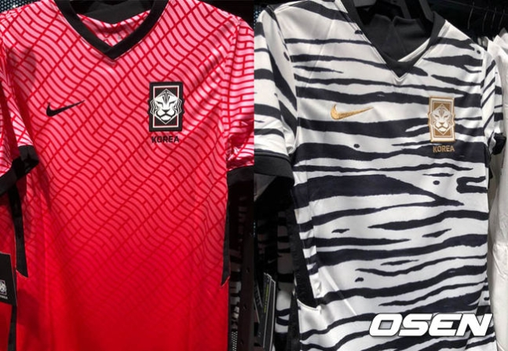

- html
- css
- javascript
HTML
Hypertext Markup Language(HTML) is the standard markup language for
creating web pages and web application.

논란의 축구대표팀 새로운 유니폼이 팬들사이에서 화제다. 축구대표팀 후원사 나이키는 지난 2월 6일 새로운 디자인의 유니폼을 공개했다. 한국의 상징인 붉은 물결무늬 패턴이 들어간 유니폼과 백호무늬의 유니폼 등 기존에 비해 파격적인 디자인이었다.
대한축구협회 역시 19년동안 써왔던 호랑이 엠블렘을 바꿨다. 마치 호랑이가 랩을 뚫고 나오는 듯한 난해한 디자인으로 팬들에게 엄청난 비판을 들었다. 엠블렘에서 대표팀의 전통과 권위가 전혀 느껴지지 않고 비웃음을 자아낸다는 반응이 주류였다.